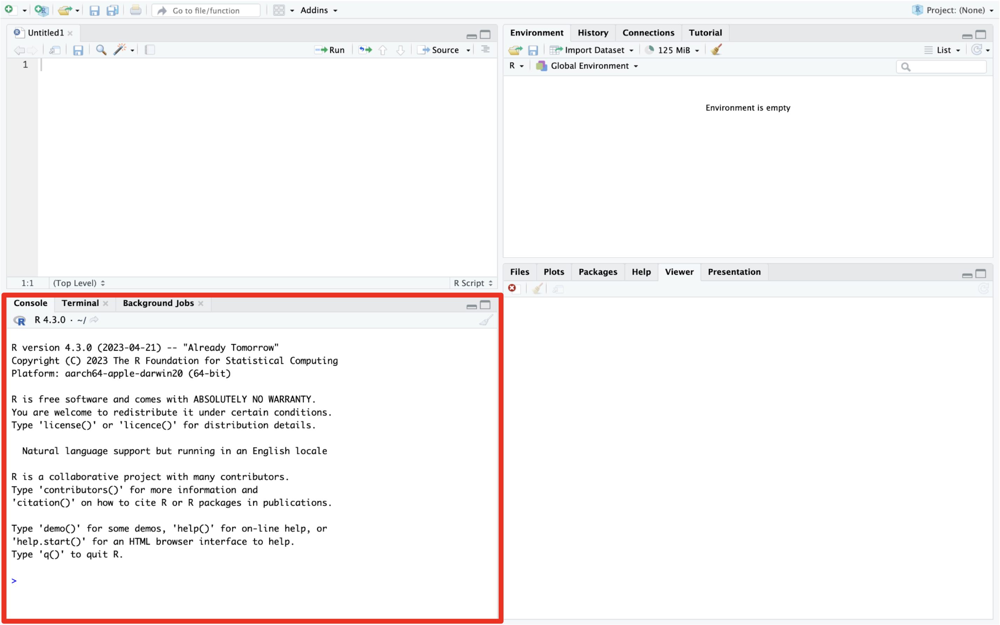
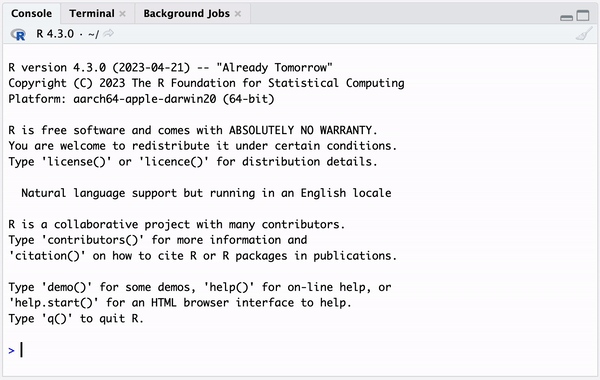
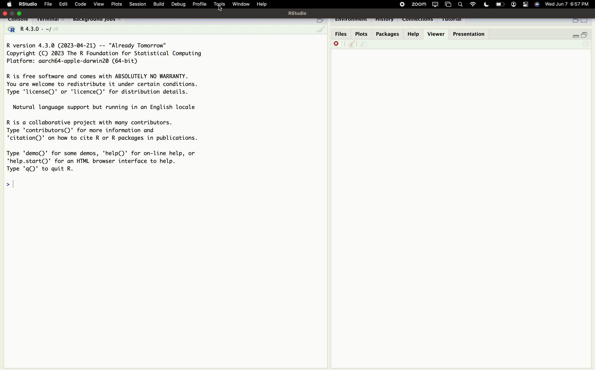

versionComputing Setup
A friendly note from your friendly TA advisor Quang
Welcome to the Summer Undergraduate Research Experience (SURE) 2023 hosted by the Department of Statistics & Data Science at Carnegie Mellon University. We are excited to guide you through exciting topics in statistics and data science, focusing on applications in sports and health analytics.
To get you started, please complete our step-by-step instructions for setting up the common tools that you will use throughout the program.
–Quang
R and RStudio
R is an open-source programming language for statistical computing. R is widely-used in both academia and industry, due to its capacity for statistical analysis, data visualization, and data mining. We will use R as our primary data science programming language for SURE 2023.
In order to use R effectively, we need a suitable editing environment, i.e. RStudio. For more context, RStudio is an integrated development environment (IDE) developed specifically for R programming. Although R can be run without RStudio, RStudio provides a more user-friendly experience with additional functionality.
Warning
You are more than welcome to use any other IDE that supports R, e.g., emacs, VIM, neovim, VSCode, etc.
However, the teaching staff will only provide support for the latest RStudio IDE.
To download R and RStudio, first visit https://posit.co/download/rstudio-desktop.
You will see the following two tasks to be completed:
- 1: Install
R(on the left) - 2: Install
RStudio(on the right)
Step 1: Install R
Install
R
(Note that the following instructions apply to the latest R version (4.3.0) as of May 31, 2023)
Click on DOWNLOAD AND INSTALL R. This will direct you to the CRAN (Comprehensive R Archive Network) website.
macOS
Click on Download R for macOS.
Choose the
.pkgfile suitable for your Mac (Apple silicon (M1/M2) Macs or older Intel Macs.)Open the
.pkgfile after the download is complete.Follow the installation instructions.
Windows
Click on Download R for Windows.
Click on install R for the first time (on the same line as the base subdirectory.)
Choose Download R 4.3.0 for Windows.
Open the
.exefile after the download is complete.Follow the installation instructions.
Step 2: Install RStudio
Important
R must be installed before RStudio.
Install
RStudio
Click on DOWNLOAD RSTUDIO DESKTOP… Your operating system is automatically detected. (If your OS is not correctly detected, scroll down and choose the right version for your system.)
macOS
Open the
.dmgfile after the download is complete.Drag and drop it to your Applications folder.
Windows
Open the
.exefile after the download is complete.Follow the installation instructions.
Open RStudio once the installation is finished. You should get something similar to the image below. We will run a few commands later in the Console pane, which is located on the bottom left corner and highlighted in red.

Step 3: Check R and RStudio installations
Next, we run a quick check to verify that everything looks right after installations,
Post-installation check
Open RStudio and type in the following command in the Console pane on the bottom left.
This will print out the current version of R on your machine. The output should look similar to what shown below (the first 4 lines might be different, depending on your operating system.)
_
platform x86_64-apple-darwin20
arch x86_64
os darwin20
system x86_64, darwin20
status
major 4
minor 3.0
year 2023
month 04
day 21
svn rev 84292
language R
version.string R version 4.3.0 (2023-04-21)
nickname Already Tomorrow The following gif shows what it looks like in action.

Step 4: Install required packages
We suggest that you install the following minimal set of R packages which are needed to get started with SURE 2023. We will recommend more packages for you to install as we progress through the program.
Package installation
In R, a package is a collection of functions, data and compiled code. In addition to a set of built-in base packages, there are numerous external R packages written by the community to add specific functionality.
To get started with SURE 2023, you will need to install a minimal set of packages. Again, open RStudio and type in the following command in the Console pane on the bottom left (refer to the gif in Step 3 for how to access the RStudio Console pane).
rec_packages <- c("tidyverse", "styler", "xaringan", "xaringanthemer",
"xaringanExtra", "tidymodels")
install.packages(rec_packages)We can verify successful package installation, e.g., for the tidyverse, which is arguably the most popular R package for data science. To do this, run the following command in the RStudio Console pane.
library(tidyverse)You should get a message similar to the output below.
── Attaching core tidyverse packages ──────────────────────── tidyverse 2.0.0 ──
✔ dplyr 1.1.0 ✔ readr 2.1.4
✔ forcats 1.0.0 ✔ stringr 1.5.0
✔ ggplot2 3.4.1 ✔ tibble 3.2.1
✔ lubridate 1.9.2 ✔ tidyr 1.3.0
✔ purrr 1.0.1
── Conflicts ────────────────────────────────────────── tidyverse_conflicts() ──
✖ dplyr::filter() masks stats::filter()
✖ dplyr::lag() masks stats::lag()
ℹ Use the conflicted package (<http://conflicted.r-lib.org/>) to force all conflicts to become errorsStep 5: Setup and run R Primers on Posit Cloud
In addition to following the steps above for installing R and RStudio on your computer, we recommend you make a free Posit Cloud account at https://posit.cloud/. This is a free, browser-based version of R and RStudio that also provides access to a growing number of R tutorials / primersrelevant to the summer program material
Setup Posit Cloud
After you create a free Posit Cloud account, click on the navigation menu by “Your Workspace”. Then click on “Primers” to bring up a menu of tutorials. Prior to June 6th, please complete the following (listed in order of importance):
- in “The Basics”, you only need to complete the “Programming Basics” primer,
- complete all three primers in “Work with Data”,
- complete all seven primers in “Write Functions”.
Feel free to explore the other primers listed, specifically for “Iterate” and “Tidy Your Data”. We will be covering data visualization extensively in the first two weeks, so you do not worry about working through the data visualization primers.
After completing the above primers available on the RStudio Cloud, try replicating the some type of R programming basics in your own local version of R and RStudio installed on your computer. RStudio Cloud is a great practical alternative to use in case we are unable to resolve errors with regards to installation on your own personal computer (an unlikely scenario). We strongly encourage you to use an installed version of R and RStudio throughout the program, due to RStudio Cloud data limitations that are important for your research projects throughout the summer.
Do not worry if you are unable to complete all of the R tutorials and steps above prior to June 5th. The teaching assistants will be reviewing the R and tidyverse basics and materials in the first week’s lab sessions. Again, if you have any questions, do not hesitate to reach out to the instructors above and we look forward to meeting you June 5th!
Resources
Here are some selected resources by the teaching staff for getting started with R and data science. Clicking on the contained thumbnail images will direct you to the website of these references.
Inside each of the resource callouts below are helpful descriptive summaries from your TA Advisor Quang. These help explain how you can get the most out of each resource.
Important
You do not need to know all of the materials contained in these resources before starting SURE 2023. We will introduce you to most of these contents throughout the program. However, we recommend using them regularly as additional references.
Books
R for Data Science

A great introduction to doing data science in R. It provides a thorough overview of basic data science tasks, most notably data tidying, wrangling, and visualization with the tidyverse.
Modern Data Science with R

Another good introductory book for data science. It contains a wide array of topics, including a chapter on data science ethics and special topics on geospatial data.
An Introduction to Statistical Learning

A simple introduction to statistical machine learning without much technical detail. It covers modeling concepts that we will be discussing in this program such as classification, regression, variable selection, clustering, and tree-based methods.
Websites
ggplot2 references

Featuring ggplot2 cheatsheet, function documentations, FAQs, and extensions.
Videos
David Robinson’s TidyTuesday screencasts

Each video is a detailed walk-through on how to approach, clean, summarize, visualize, and analyze a dataset provided by the TidyTuesday project. Useful R tips and tricks are often offered. For context, TidyTuesday releases a weekly dataset, aiming to promote data analysis with the tidyverse suite of packages. Numerous examples of TidyTuesday contributions (e.g., visualizations) can be found under the #TidyTuesday Twitter hashtag.
RStudio Customization
Code formatting

The tidyverse style guide is a great reference for good coding style. It is supported by the styler package in R. The figure above provides a simple demonstration for code formatting with styler, taken from the package site.
RStudio theme
RStudio can be customized with different themes. To explore built-in themes,
- Navigate to the menu bar at the top of your screen
- Choose Tools \(\rightarrow\) Global Options \(\rightarrow\) Appearance
- Change your RStudio theme under Editor theme
Note that within the Appearance tab, there are also options for changing your Editor font, Editor font size, etc.
The following gif illustrates a theme switch from Textmate (default) to Tomorrow Night Bright, which is the theme used by your TA advisor Quang.

Further, the rsthemes package provides additional options to the original built-in themes. The package can be installed with the following command:
install.packages(
"rsthemes",
repos = c(gadenbuie = 'https://gadenbuie.r-universe.dev', getOption("repos"))
)You can then follow the same instructions as above and select your favorite theme. For your information, your co-instructor Shamindra uses the Dracula theme.
Font ligatures
(This section is heavily borrowed from Jeffrey Girard’s excellent blog post on Using Fira Code Ligatures in RStudio. Please check out the linked article for step-by-step instructions.)
To quote the blog post (which quoted the Fira Code README):
Problem
Programmers use a lot of symbols, often encoded with several characters. For the human brain, sequences like
->,<=or:=are single logical tokens, even if they take two or three characters on the screen. Your eye spends a non-zero amount of energy to scan, parse and join multiple characters into a single logical one. Ideally, all programming languages should be designed with full-fledged Unicode symbols for operators, but that’s not the case yet.Solution
Fira Code is a free monospaced font containing ligatures for common programming multi-character combinations. This is just a font rendering feature: underlying code remains ASCII-compatible. This helps to read and understand code faster. For some frequent sequences like
..or//, ligatures allow us to correct spacing.
Here are some examples of ligatures for common operators in R.
| Without ligature | With ligature |
|---|---|
x <- 10 |
|
x <= y |
|
x >= y |
|
x == y |
|
x != y |
Once again, please see the aforementioned blog post for a detailed instruction of how to set up ligatures in RStudio.
Slack and Zoom/Microsoft Teams
\(\text{}\) We will be using Slack for real-time communication throughout the program. We highly recommend having the Slack app downloaded on both your computer and phone.
\(\text{}\) We will have daily virtual talks on Zoom or Microsoft Teams. Please make sure Zoom and Microsoft Teams App are both installed and up-to-date on your device(s).
CMU WiFi (in housing and on campus)
Initial CMU SECURE WiFi setup
\(\text{}\) When you arrive at your CMU housing, or on the CMU campus you will receive a printed (paper) card which contains your personal CMU WiFi username and password (for SURE 2023). You must keep your assigned card secure and private. To login to CMU WiFi, do the following (inside your CMU housing, or on CMU campus):
Instruction: Setting up CMU campus and Housing WiFi
- Grab your paper card containing your original guest WiFi username and password.
- Go to identity.andrew.cmu.edu.
- Enter the guest ID and initial password.
- Click Login.
- Follow the on-screen steps to set a secure password for the guest account.
- Important: Please change your assigned temporary password immediately after you login, otherwise your account will expire in 2 days. We will have to keep asking for new logins for you since it costs you valuable time away from WiFi .
Resetting CMU SECURE expired WiFi password
In case you do set up the above, but forget to change your password in time and it expires, please follow the instructions below to reset it:
Instruction: Resetting expired guest WiFi password
- Grab your paper card containing your original guest WiFi username and (expired) password.
- Go to http://identity.andrew.cmu.edu/
- Enter your username and original (expired) password.
- At the next prompt re-enter your username and (expired) password.
- Then enter your current (expired) password and new password twice to confirm it.
- Make sure to note down your new password in a secure place.
- You should now be reconnected to CMU-SECURE using your original guest username and new password (as you had created in the previous step)